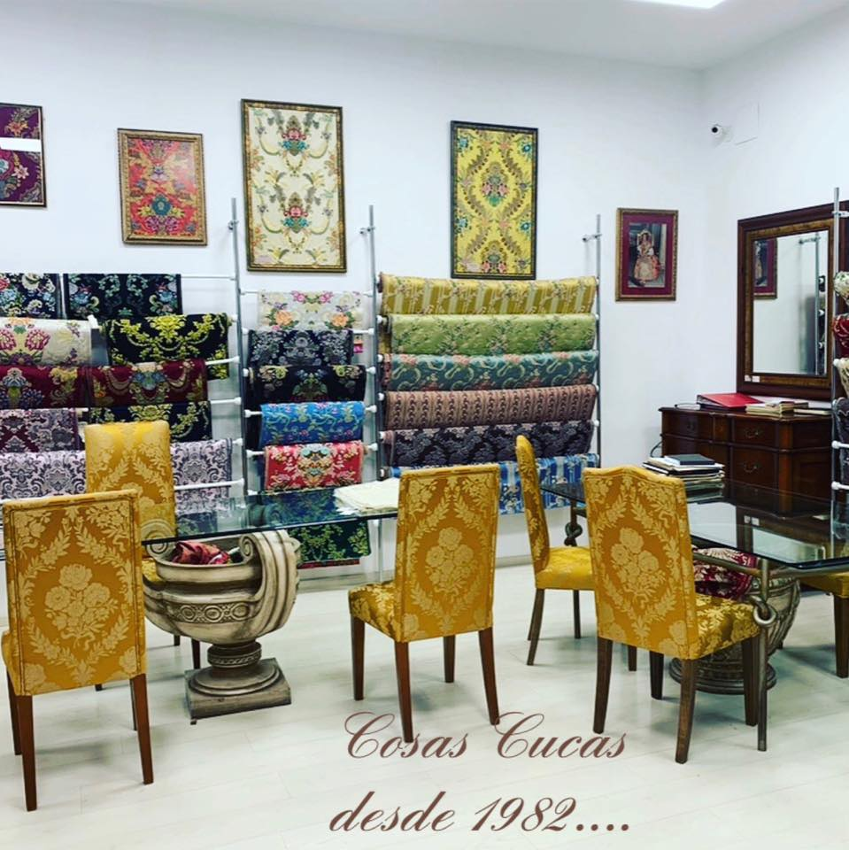
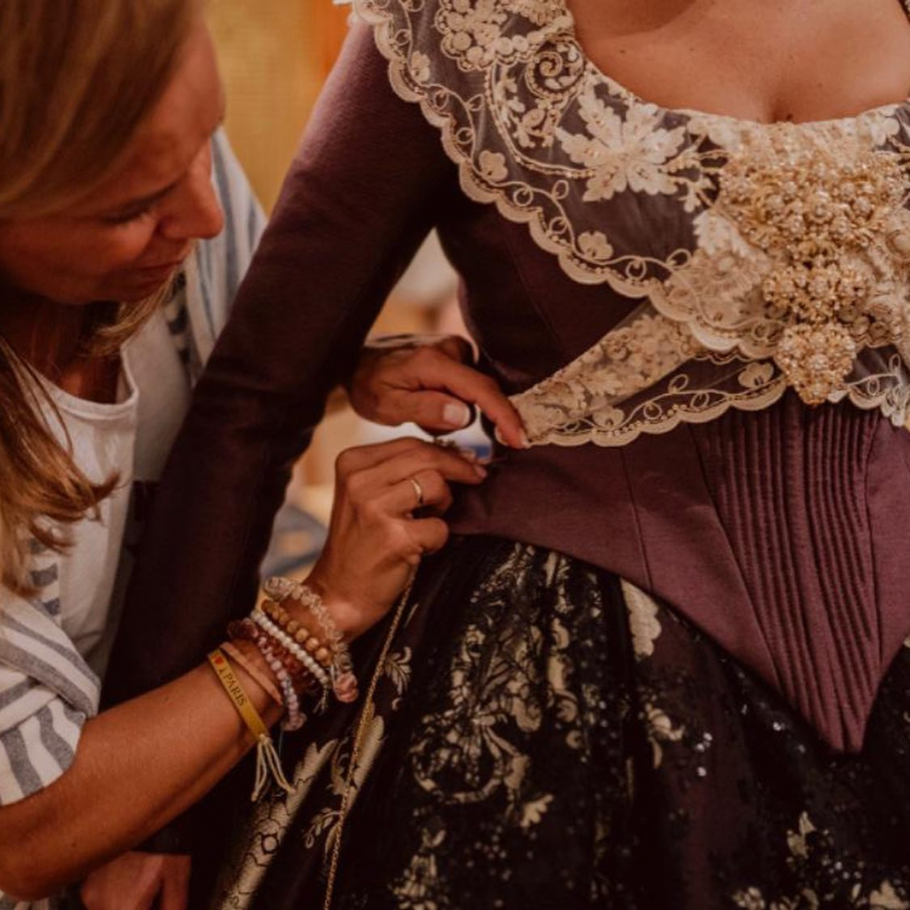
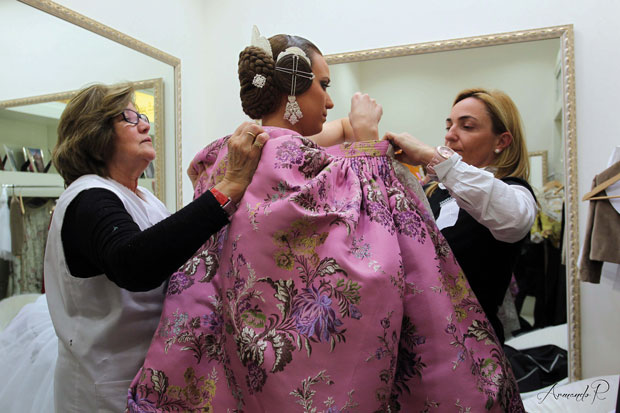

Cada año el honor de vestir a las Falleras Mayores de Valencia y sus Cortes de Honor. Cuatro décadas de confianza que se renuevan.
 Nuevo
Nuevo
Desde su fundación en 1982 en los pintorescos poblados marítimos, Cosas Cucas ha sido un faro de tradición y elegancia en el mundo de la indumentaria valenciana. Inspirada por su profundo vínculo con el estudio y la pasión por la indumentaria, nuestra fundadora Paquita Martorell abrió las puertas de nuestra primera tienda en el entrañable barrio del Cabañal. Desde entonces, hemos tenido el honor de vestir a numerosas Falleras Mayores de Valencia e infantiles, cortes de honor, reinas de las fiestas de la comarca y distinguidas personalidades de la sociedad valenciana.



Las hijas de Paquita Martorell, Noelia y María, son una parte fundamental del legado y la continuidad de Cosas Cucas. Como parte de la segunda generación, han heredado la pasión por la indumentaria valenciana y han dedicado su vida al negocio familiar. Desde que se unieron al taller dirigido por su madre, han aportado su experiencia y habilidades para mantener los altos estándares de calidad y artesanía que caracterizan a Cosas Cucas.
Han desempeñado un papel importante en la expansión y modernización de la empresa, participando en la elaboración de nuevos dibujos exclusivos y en la introducción de innovaciones en el proceso de confección. Su compromiso con la tradición y su visión para el futuro han sido fundamentales para mantener a Cosas Cucas como un referente en el mundo de la indumentaria valenciana.
Con más de cuatro décadas de dedicación y pasión por este arte, Cosas Cucas se ha distinguido por la calidad y el detalle de cada prenda, convirtiéndonos en un referente en el sector. Nuestra participación en la vida fallera no solo representa una oportunidad para vestir a figuras emblemáticas, sino también un homenaje a nuestra historia y a la belleza de nuestra cultura.